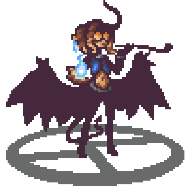

About me

Hi! I'm Talbone.
I am a game art generalist and game designer working in games since 2013, having done lots of 2D and 3D stuff for various titles.
My first forays into game development were way back in elementary school, when i would make small first person mazes in powerpoint (using MSPaint to do the art) and then would distribute it to my schools library computers. After doing this for a year (and even getting a fan!) i decided that was what i wanted to do with my life.

Since then i dabbled my way through RPG Maker, Game Maker, Flash, Blender, Unreal, Construct 2, PICO-8, and most predominantly Unity. Beginning in 2013 i started actually making money with pixel art, mostly for RPG Maker projects, and game art has been my main source of income ever since. in 2015 i entered college to study game development, ultimately meeting the people with whom i would later help start Demerara Games with.
After parting ways with Demerara, I had the oportunity to work on Profane, a Sandbox MMORPG currently being developed at INSANE, and after that i also got to work and help ship Relic Hunters Rebels on Netflix Games at Rogue Snail. I also got to work on Relic Hunters Legend there.